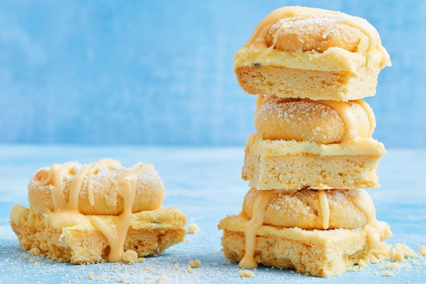

Passionfruit melting moment slice

It only takes six basic ingredients to create a melting moment of sweet passionfruit bliss. With a zing from the passionfruit, melt-in-your-mouth shortbread and the secret weapon, custard powder- our favourite biscuits have been transformed into the most delectable slice.
Ingredients
- 1 tsp vanilla extract
- 310g butter, chopped, at room temperature
- 210g (11 ⁄3 cups) icing sugar mixture, plus 3 tbsp, extra
- 225g (11 ⁄2 cups) plain flour
- 70g (1 ⁄2 cup) custard powder, plus extra, to dust
- 3 passionfruit, plus extra, strained, to make icing
- Select all ingredients
Steps
- Preheat oven to 170C/150C fan forced. Grease a 19cm (base size) square cake pan (see tip). Line with baking paper, allowing paper to overhang 2 sides. Line a baking tray with baking paper.
- Use electric beaters to beat the vanilla , 250g butter and 60g (1 ⁄3 cup) sugar in a bowl until pale and creamy. Sift over flour and custard powder . Use a flat-bladed knife in a cutting motion to mix until evenly incorporated and a soft dough forms.
- Press half the dough over base of prepared pan. Roll remaining dough into 16 balls. Place on prepared tray, spacing 3cm apart. Lightly dust a fork with extra custard powder then use to press each ball to a 3.5cm disc. Bake, swapping tray and pan halfway through cooking, for 18 minutes or until light golden underneath. Set aside biscuit base to cool completely. Set aside biscuits for 5 minutes to cool slightly before transferring to a wire rack to cool completely.
- Use electric beaters to beat the remaining butter until pale and creamy. Gradually add remaining sugar, beating well after each addition until combined. Scoop out passionfruit pulp and add to butter mixture. Beat until combined.
- Combine 21 ⁄2 tbsp extra sugar and a little extra strained passionfruit juice in a small bowl until icing is a drizzling consistency.
- Use paper to carefully lift biscuit base out of pan. Spread over the filling. Arrange biscuits on top. Dust with remaining extra icing sugar. Drizzle over icing. Cut into squares between biscuits to serve.